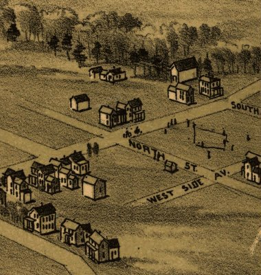

| Cambridgeboro, Pennsylvania - 1895 |
|---|
 |
| Cambridgeboro, Crawford County,
Pennsylvania. Drawn by T. M. Fowler. Fowler, T. M. (Thaddeus Mortimer), 1842-1922. CREATED/PUBLISHED Morrisville, Pa., 1895. NOTES Perspective map not drawn to scale. Bird's-eye-view. "Published by T. M. Fowler & James B. Moyer." Indexed for points of interest. REFERENCE LC Panoramic maps (2nd ed.), 745 |